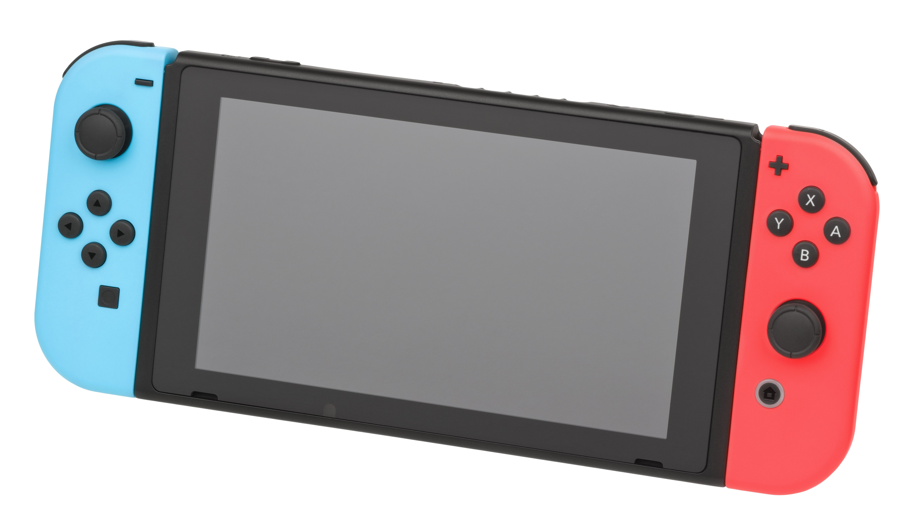

The Autopsy Report · Device #013
The Nintendo Switch
The console that refused to pick a side — handheld and home console in one body. We haven't opened one yet, so this report is built from the public record: Nintendo's own FCC filing, independent teardowns, and the silicon inside.
What is this thing?
The Nintendo Switch is Nintendo's hybrid game console: slide it into its dock and it plays on your TV; lift it out and the same game continues on the built-in screen. The original model launched March 3, 2017; the handheld-only Switch Lite followed on September 20, 2019; and the Switch OLED — bigger, brighter screen, more storage — on October 8, 2021. Wikipedia
Inside the original: an NVIDIA Tegra X1 chip (a phone-and-tablet-class processor Nintendo aimed at the TV), 4 GB of memory, and 32 GB of storage — 64 GB on the OLED. Wikipedia This report covers the family as a whole, but be precise about paperwork: the FCC filing described below was granted for the original HAC-001 model — a later 2019 filing extends it to the revised HAC-001(-01). The Lite (HDH-001) and OLED (HEG-001) are separate models with their own paperwork; don't assume this filing covers them. FCC filing
Not yet on our bench
No unit of ours has been opened for this report. Everything below comes from public records: Nintendo's FCC filing, independent teardowns, and published specifications. The public-record facts are as complete as we could make them; what awaits the bench is everything that requires our hands on our hardware — our own photos, our own measurements, and confirmation of exactly which board revision our future unit carries. When a Switch lands on the bench, the thin spots below are exactly where we'll start.
A short history
- March 3, 2017Nintendo launches the original Switch worldwide. The hybrid concept — one device, TV and handheld — is an instant hit and rescues Nintendo from the Wii U years. Wikipedia
- 2017The original HAC-001 clears the FCC as a game console under ID BKEHAC001 — Nintendo Co., Ltd. as the applicant, with 2.4/5 GHz Wi-Fi and Bluetooth documented in the filing. FCC filing Filing details
- July 2019Nintendo files a Class II permissive change covering the revised HAC-001(-01) — the quieter, longer-battery-life revision of the original model. Application dated July 9, 2019. FCC filing
- September 20, 2019The Switch Lite launches — handheld-only, no detachable controllers, no TV dock. A different machine for a different job. Wikipedia
- October 8, 2021The Switch OLED launches with a larger OLED display and 64 GB of storage. Same Tegra X1 heart. Wikipedia
The outside
A black tablet with rails on either side, where the two Joy-Con controllers slide on and click. Under the kickstand hides the microSD slot; the dock adds TV output, charging, and a wired-LAN adapter on the OLED model. The photo shows the original model — the one this report's FCC filing actually covers.

The board
The Switch's main board is dominated by the NVIDIA SoC under a heat spreader and heat pipe — a tablet-style thermal design, because the Tegra X1 was born for mobile devices. The FCC's internal-photo exhibit for the original HAC-001 shows the board layout as Nintendo submitted it, and public teardowns document the memory packages flanking the SoC, the Broadcom wireless chip, and the Realtek audio codec. FCC filing Our future unit's exact board revision and date codes await the bench.
Under the microscope: the chips
What's on the board, what each part does, and how sure we are. Confirmed means primary evidence only — an FCC exhibit, a manufacturer manual or datasheet, or an official announcement. Likely means corroborated secondary or public-teardown evidence. Markings below come from public teardowns of original-model boards; the Lite and OLED boards differ.
| Chip | What it does | How we know | Dig deeper |
|---|---|---|---|
| NVIDIA ODNX02-A2 Tegra X1 SoC |
The whole computer on one chip: ARM CPU cores plus NVIDIA graphics. | Likely Chip marking documented in public teardowns of original-model boards. | Technical overview |
| Samsung K4F6E304HB-MGCH LPDDR4 |
System memory — 4 GB total across the packages. | Likely Marking documented in public teardowns. No public Samsung datasheet found for this mobile part. | No public datasheet found |
| Broadcom/Cypress BCM4356 | Wi-Fi and Bluetooth radio — the chip behind the FCC filing's wireless tests. | Likely Marking documented in public teardowns. No public datasheet — Broadcom/Cypress keep wireless datasheets closed. | No public datasheet found |
| Realtek ALC5639 | Audio codec — converts digital audio to the headphone jack and speakers. | Likely Marking documented in public teardowns. No public Realtek datasheet found. | No public datasheet found |
None of the four chipmakers publish public datasheets for these parts — that's a documentation gap in the industry, not in the research. Also awaiting the bench: which revision's memory and wireless chips our future unit carries, and whether its board matches the FCC exhibit's layout.
The government's file on this box
The original Switch's FCC record is unusually complete. Filed under FCC ID BKEHAC001 by Nintendo Co., Ltd., equipment class "Game Console," model HAC-001(-01) — it includes test reports (2.4/5 GHz Wi-Fi, Bluetooth, radiated emissions), setup photos, and internal photos of the board as submitted. The 2019 Class II permissive change (application July 9, 2019) extended the authorization to the revised HAC-001(-01). FCC filing
Two cautions. First, this filing represents the original model only — the Lite and OLED have their own model codes (HDH-001, HEG-001) and their own paperwork. Second, the internal photos show Nintendo's certification sample; production boards drifted across the Switch's long life, and ours — whenever it arrives — will be its own evidence. Browse the filing: BKEHAC001 on fccid.io.
Debug and service modes
Nintendo built a public recovery path into the Switch and documented how to reach it. With the console powered off, hold the volume-up and volume-down buttons together, then press the power button and keep holding the volume buttons until the Maintenance Mode menu appears. From there you can apply a system update or initialize the console — including an option that resets the system without deleting save data. Nintendo's published steps This is a legitimate, manufacturer-published recovery procedure — the kind of thing we document, not the kind we defeat. We haven't tested it on our own hardware, because we don't have any yet.
What public records show
The public record gives us the Switch family's full biography: three models and their dates, the Tegra X1 architecture, the memory and storage configurations, a complete FCC filing for the original model with internal photos, and a manufacturer-published maintenance mode. What it does not give us is anything that only exists inside a specific unit — board revision, date codes, or how component choices drifted across production. That's the bench's job.
What we haven't done
- We haven't opened, photographed, or measured a Switch of our own.
- We haven't confirmed which model or board revision our future unit will be.
- We haven't tested Maintenance Mode on our own hardware.
- We haven't verified the chip markings against a physical board.
- The photo above is a freely licensed stock image, credited in full — not our hardware.
By the numbers
- Models: original HAC-001 (2017), Lite HDH-001 (2019), OLED HEG-001 (2021)
- FCC ID: BKEHAC001 (Nintendo Co., Ltd.) — original model; 2019 permissive change covers HAC-001(-01)
- SoC: NVIDIA Tegra X1 (ODNX02-A2)
- Memory: 4 GB LPDDR4
- Storage: 32 GB (original/Lite), 64 GB (OLED), plus microSD
- Wireless: 2.4/5 GHz Wi-Fi, Bluetooth (BCM4356)
- Launched: March 3, 2017 (original); September 20, 2019 (Lite); October 8, 2021 (OLED)
Words to know
Every term this page uses, in plain English. No prior knowledge required.
- SoC (system on a chip)
- The whole computer — processor, graphics, and more — on one piece of silicon. The Tegra X1 is the Switch's SoC.
- Tegra X1
- NVIDIA's mobile chip family, originally built for tablets and cars. Nintendo aimed it at the TV.
- LPDDR4
- Low-power memory of the kind phones use — fast, and sips battery.
- Maintenance Mode
- The Switch's built-in recovery screen: update the system or reset it, reached with the volume buttons at power-on.
- Class II permissive change
- An FCC paperwork update that extends an existing approval to a modified version of a device — no new ID needed.
- FCC ID
- The ID the FCC assigns to each approved wireless product. The first few characters are the company's grantee code; the rest is the maker's model code. Punch it into fccid.io and the whole public filing comes up.
Sources & confidence
- FCC ID BKEHAC001, grantee Nintendo Co., Ltd., model HAC-001(-01), 2019-07-09 permissive change: the FCC filing record itself. High confidence.
- Chip markings (Tegra X1 ODNX02-A2, Samsung LPDDR4, BCM4356, ALC5639): public teardowns with photographs. Medium-high confidence; board revisions differ.
- Model dates, memory/storage configurations, hybrid concept: published technical overviews. High confidence in the facts, medium in any single source.
- Maintenance Mode procedure: Nintendo's published instructions as reported. High confidence in the procedure's existence; untested by us.
- Anything not listed here is unknown until the bench says otherwise. We'll say so, out loud, when that's the case.
We publish no firmware, serials, keys, or private data. This report uses only public records plus a freely licensed stock photo.
Legal note. BareBoard is an educational project. We don't publish, host, or distribute firmware, keys, passwords, or credentials. Product names and trademarks belong to their respective owners and appear here only to identify the hardware. If you believe anything here infringes your rights, contact us and we'll address it promptly.